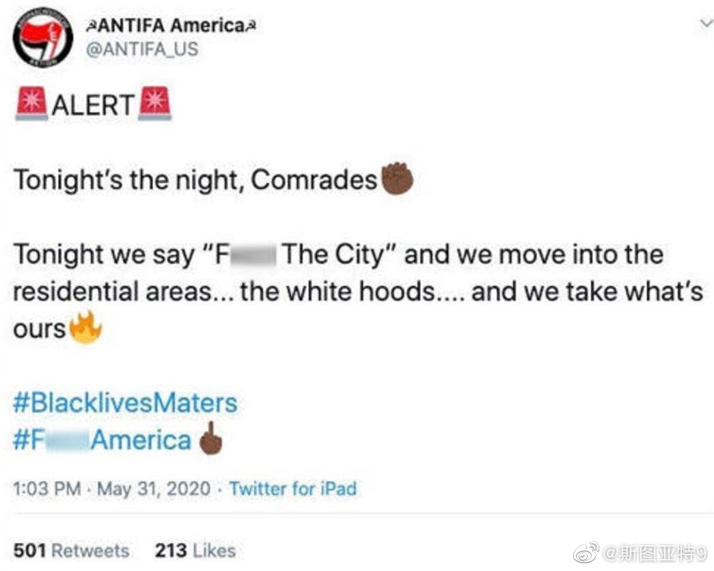
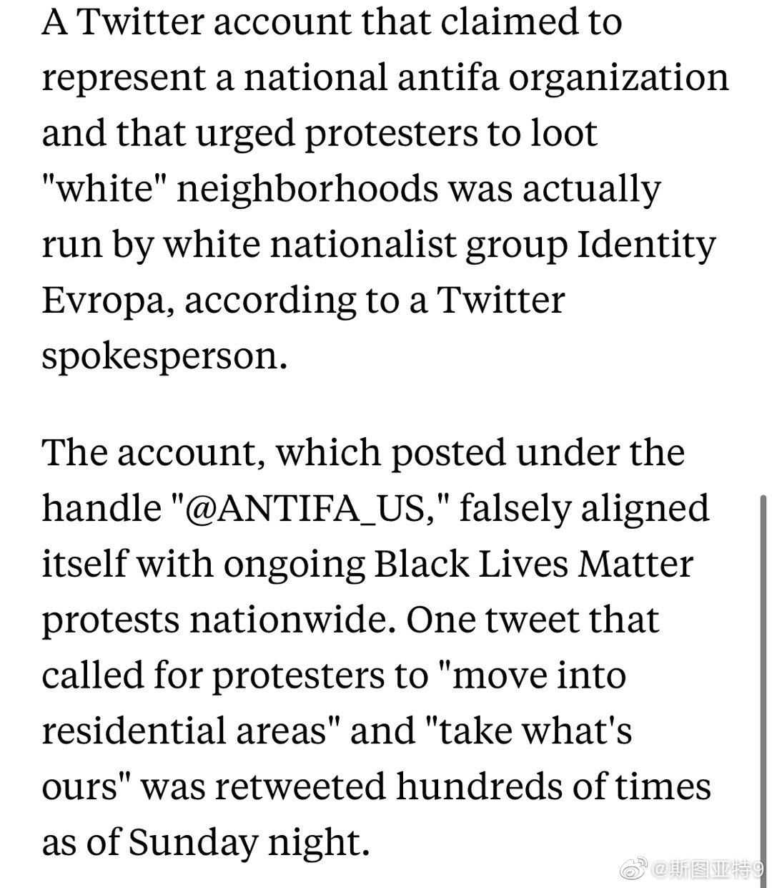
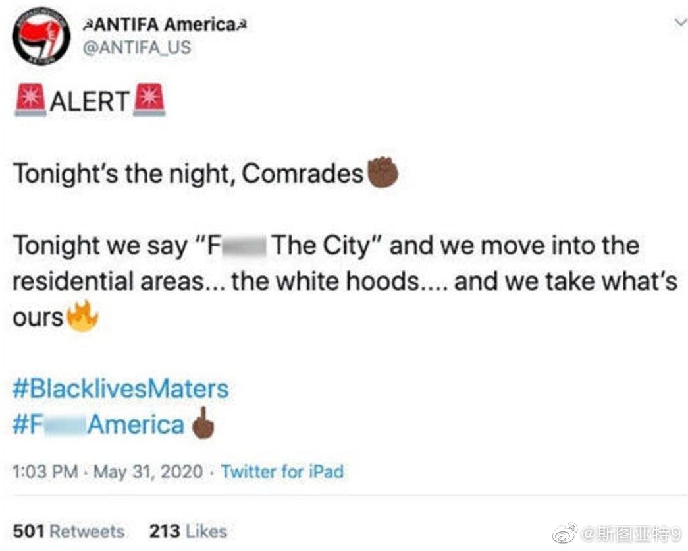
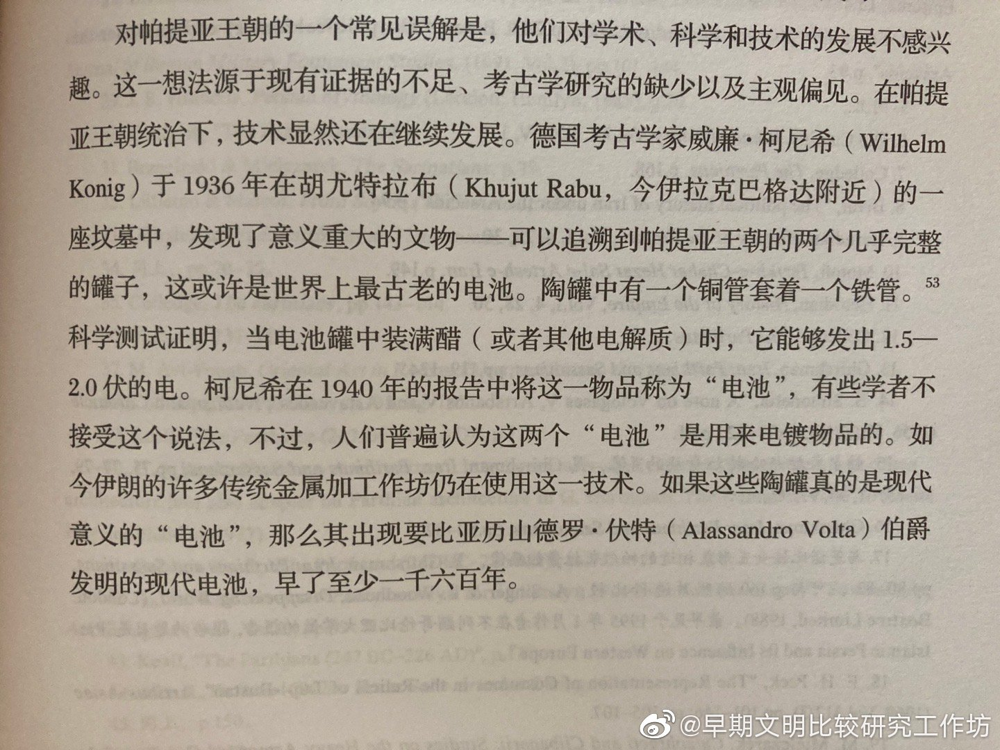

很多人在转发或者引用那个所谓”Antifa America”说“挺进白人居民区”的推特（图一）。这个当时就很多人怀疑，昨天得到了推特公司的官方澄清。这个推特账户，实际是一个白人种族主义者组织Identity Evropa注册的。正好是Antifa的对立方伪造出来的。在网上搜一搜就能找到报道这个的新闻。我希望我的朋友们没有被这个消息蒙骗的。有组织的挺进居民区这事不存在。
很多人在转发或者引用那个所谓”Antifa America”说“挺进白人居民区”的推特（图一）然后这个账号被封。这个当时就很多人怀疑，昨天得到了推特公司的官方澄清。这个号称“Antifa America”的推特账户，实际是一个白人种族主义者组织Identity Evropa注册的。正好是Antifa的对立方伪造出来的。在网上搜一搜就能找到报道这个的新闻。我希望我的朋友们没有被这个消息蒙骗的。有组织的挺进居民区这事不存在。
//@天书广播:我早就说了这种书不能看。伊朗民族主义者自high的产物。伊朗文明五千万年，谁说不对谁就是不爱伊朗～@早期文明比较研究工作坊:“帕提亚电池”？！是不是过于超前了，即便这个电量对宏观生产力没有带来实质影响 